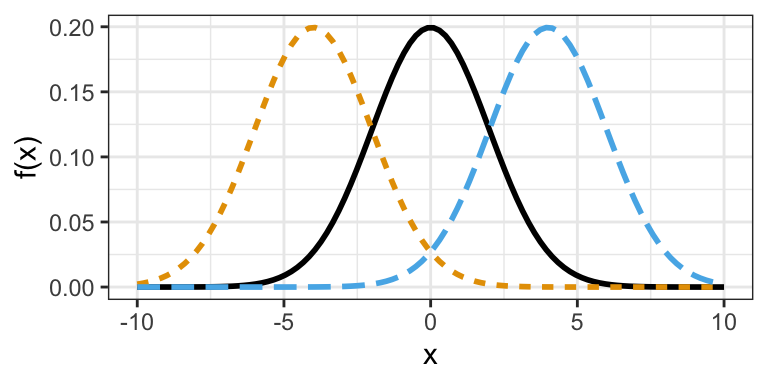
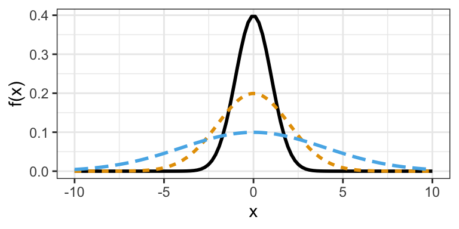

Chapter 5: Continuous Probability Distributions
A continuous random variable “takes on decimal values.”
For such random variables, the probability at any specific value is 0.
Example:
- \(\Pr(\text{a man is exactly } 6', 2.357921784123'') \approx 0\)
- \(\Pr(\text{a man is exactly } 6'2'') \approx 0\)
- Men are a little above or a little below.
But, we know some regions are more likely than others.
- \(\Pr(5' \leq X \leq 7') > \Pr(0' \leq X \leq 1')\)
We describe this intuition with a PDF.
A Probability Density Function of a random variable \(X\) is a function \(f\) such that: \[ \Pr(a \leq X \leq b) = \text{area below curve between } a \text{ and } b \]
The CDF is again the \(F(x) = \Pr(X \leq x)\).
Example: \(X =\) Serum triglyceride level
\(\Pr(50 \leq X \leq 100)\)
\(\Pr(X \leq 100)\)

Expected value: \(\mu\), average \(X\) over many trials. \[ \mu = E[X] = \int_{-\infty}^{\infty} x f(x)\,dx \] where \(f(x)\) = density.
Variance: Average squared distance. \[ \sigma^2 = E\left[(X - \mu)^2\right] = E(X^2) - \mu^2 \] \[ \sigma^2 = \int_{-\infty}^{\infty} (x - \mu)^2 f(x)\,dx \]
Most common continuous distribution: Normal distribution
- If \(X \sim N(\mu, \sigma^2)\), then \[ f(x) = \frac{1}{\sqrt{2\pi \sigma^2}} \exp\left[-\frac{1}{2\sigma^2}(x-\mu)^2\right] \]
- Density depends on \(\sigma^2\) (variance) and \(\mu\) (mean).
Also, if \(X \sim N(\mu, \sigma^2)\), then \(E(X) = \mu\), \(\mathrm{Var}(X) = \sigma^2\).
Normal distribution plot:

Normal densities with different means.

Normal densities with different variances

The standard normal distribution is \(N(0,1)\).
Properties:
- 68–95–99.7 rule:
- 68% of area within \(\pm 1\sigma\)
- 95% of area within \(\pm 2\sigma\)
- 99.7% of area within \(\pm 3\sigma\)
- Symmetric: \(f(\mu - x) = f(\mu + x)\)
- \(\mu =\) median
- If \(X \sim N(\mu, \sigma^2)\), then \(Z = \frac{X - \mu}{\sigma} \sim N(0, 1)\)
- If \(X \sim N(\mu_1, \sigma_1^2)\) and \(Y \sim N(\mu_2, \sigma_2^2)\) are independent, then \[ Z = X + Y \sim N(\mu_1 + \mu_2, \sigma_1^2 + \sigma_2^2) \]
- 68–95–99.7 rule:
We denote PDF of standard normal by \(\phi(x)\)
The CDF is \(\Phi(x) = \Pr(X \leq x)\)
Example:
- Blood Pressure \(\sim N(80, \sqrt{144})\)
- Mild hypertension is \(90 \leq \text{DBP} \leq 100\)
- Units are in mmHg
- Individuals are randomly sampled
- What is \(\Pr(\text{mild hypertensive})\)?
\[\begin{align*} \Pr(90 \leq X \leq 100) &= \Pr(X \leq 100) - \Pr(X < 90)\\ &= \texttt{pnorm(100, mean = 80, sd = sqrt(144))} - \texttt{pnorm(90, mean = 80, sd = sqrt(144))}\\ &= 0.1545 \end{align*}\]
Visualizations of normal distribution regions XYZ IMAGE HERE
Exercise: Tree diameter \(\sim N(8, 2^2)\) (in inches)
What is the probability that the tree has diameter \(> 12\) in?Solution:
\[ 1 - \texttt{pnorm}(12, 8, 2) = 0.02275 \]
If \(X_1, \dots, X_n\) are random variables and
\[ L = \sum_{i=1}^n c_i X_i \quad \text{for } c_i \text{ constants (not r.v.s)} \] then
\[ \mathbb{E}[L] = \sum_{i=1}^n c_i \mathbb{E}[X_i] \] \[ \mathrm{Var}(L) = \sum_{i=1}^n c_i^2 \mathrm{Var}(X_i) \]If the \(X_i\) are also normally distributed, then
\[ L \sim N(\mathbb{E}[L], \mathrm{Var}(L)) \]Example:
Let \(X\) = serum creatinine level for Caucasian individual
Let \(Y\) = serum creatinine level for Black individual\[ X \sim N(1.3, 0.125), \quad Y \sim N(1.5, 0.25) \]
What is the distribution of the average level for one Caucasian and one Black individual chosen at random?
Let \[ Z = \frac{1}{2}X + \frac{1}{2}Y \Rightarrow Z \sim N(1.4, 0.175) \]
- \(\mathbb{E}(Z) = \frac{1}{2}(1.3 + 1.5) = 1.4\)
- \(\mathrm{Var}(Z) = \frac{1}{4}(0.125 + 0.25) = 0.175\)
Normal Approximation to Binomial (rule of thumb):
If \(X \sim \mathrm{Bin}(n, p)\) and \(np(1-p) \geq 5\), then \[ X \approx N(np, np(1-p)) \]
Let \(X \sim \mathrm{Bin}(n, p)\), and let \(Y \sim N(np, np(1 - p))\).
Then with continuity correction: \[ \Pr(a \leq X \leq b) \approx \Pr\left(a - \frac{1}{2} \leq X \leq b + \frac{1}{2}\right) \]
We will use this for 2-sample binomial tests.
Why?
Let \(T_1, T_2, \dots, T_n\) be \(n\) independent Bernoulli trials: \[ T_i = \begin{cases} 1 & \text{w.p. } p \\ 0 & \text{w.p. } 1 - p \end{cases} \]Let \[ X = T_1 + T_2 + \dots + T_n = \sum T_i \]
The Central Limit Theorem says normal for large \(n\).
Normal Approximation to Poisson
If \(X \sim \mathrm{Poisson}(\mu)\), then
\(Y \sim N(\mu, \mu)\)- Rule of thumb: for \(\mu \geq 10\)
\[ \Pr(a \leq X \leq b) \approx \Pr\left(a - \frac{1}{2} \leq Y \leq b + \frac{1}{2}\right) \]
- Rule of thumb: for \(\mu \geq 10\)
Exercise 5.12 – 5.13 of Rosner
- Of men aged 30–34 who have smoked:
- \(X\) = number of years a man has smoked
- \(Y\) = number of years smoked by women in age group
\[ X \sim N(12.8, 5.1^2), \quad Y \sim N(9.3, 3.2^2) \]
- Of men aged 30–34 who have smoked:
Q1: What proportion of men have smoked for more than 20 years? Women?
Men: \[ 1 - \texttt{pnorm}(20, \text{mean} = 12.8, \text{sd} = 5.1) = 0.07901 \]
Women: \[ 1 - \texttt{pnorm}(20, \text{mean} = 9.3, \text{sd} = 3.2) = 0.004133 \]
XYZ IMAGE HERE
Exercise 5.126 – 5.130
Christmas Bird Count is a holiday tradition in a boring part of Massachusetts.
Year \(x_i\) 2005 76 2006 47 2007 63 2008 53 2009 62 2010 64 2011 67 \[ \sum x_i = 432, \quad \sum x_i^2 = 27,\!717 \]
What is the mean number of birds?
\[ \bar{x} = \frac{432}{7} = 61.71 \]
What is the standard deviation?
\[ \frac{1}{7}(27717) - \left(\frac{432}{7}\right)^2 = 78.78 \]
\[ \mathrm{SD} = \sqrt{78.78} = 8.876 \]
Suppose number of birds is normal with same mean and SD as previous years.
What is the probability of at least 60 birds? Apply continuity correction.\[ 1 - \texttt{pnorm}(59.5, \text{mean} = 61.71, \text{sd} = 8.876) = \boxed{0.5983} \]
Find “normal range” \((L, U)\) (integers) such that:
- \(L\) = 5th percentile
- \(U\) = 95th percentile
\[ \texttt{qnorm}(c(0.05, 0.95), \text{mean} = 61.71, \text{sd} = 8.876) = (52.51, 70.91) \]
- So the normal range is 52 to 80
- \(L\) = 5th percentile
What is the probability that \(X \geq U\) at least once during a 10-year period?
\[ \Pr(X \geq U) = 1 - \texttt{pnorm}(79.5, \text{mean} = 61.71, \text{sd} = 8.876) = 0.02252 \]
Let \(Y\) = number of years \(\geq U\)
\(Y \sim \mathrm{Bin}(10, 0.02252)\)\[ \Pr(Y \geq 1) = 1 - \Pr(Y = 0) = 1 - \texttt{dbinom}(0, 10, 0.02252) = \boxed{0.2037} \]